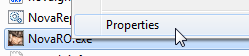

File list
This special page shows all uploaded files.
{kind=link}
{kind=link}
| Date | Name | Thumbnail | Size | User | Description | Versions |
|---|---|---|---|---|---|---|
| 14:56, 10 February 2016 | Wl stasis.gif (file) | 1 KB | Mayo | 1 | ||
| 14:56, 10 February 2016 | Wl soulexpansion.gif (file) | 1 KB | Mayo | 1 | ||
| 14:55, 10 February 2016 | Wl siennaexecrate.gif (file) | 1 KB | Mayo | 1 | ||
| 14:40, 10 February 2016 | Wl release.gif (file) | 1,016 bytes | Mayo | 1 | ||
| 14:40, 10 February 2016 | Wl recognizedspell.gif (file) | 1 KB | Mayo | 1 | ||
| 14:40, 10 February 2016 | Wl reading sb.gif (file) | 1 KB | Mayo | 1 | ||
| 14:40, 10 February 2016 | Wl radius.gif (file) | 1 KB | Mayo | 1 | ||
| 14:39, 10 February 2016 | Wl marshofabyss.gif (file) | 1 KB | Mayo | 1 | ||
| 14:39, 10 February 2016 | Wl jackfrost.gif (file) | 1 KB | Mayo | 1 | ||
| 14:39, 10 February 2016 | Wl hellinferno.gif (file) | 1 KB | Mayo | 1 | ||
| 14:39, 10 February 2016 | Wl frostmisty.gif (file) | 1 KB | Mayo | 1 | ||
| 14:39, 10 February 2016 | Wl freeze sp.gif (file) | 1 KB | Mayo | 1 | ||
| 14:38, 10 February 2016 | Wl earthstrain.gif (file) | 1 KB | Mayo | 1 | ||
| 14:38, 10 February 2016 | Wl drainlife.gif (file) | 1 KB | Mayo | 1 | ||
| 14:38, 10 February 2016 | Wl crimsonrock.gif (file) | 1 KB | Mayo | 1 | ||
| 14:38, 10 February 2016 | Wl comet.gif (file) | 1 KB | Mayo | 1 | ||
| 14:38, 10 February 2016 | Wl chainlightning.gif (file) | 1 KB | Mayo | 1 | ||
| 19:30, 11 January 2016 | Wl 07.png (file) |  |
70 KB | Tokeiburu | 1 | |
| 19:30, 11 January 2016 | Wl 05.png (file) | 57 KB | Tokeiburu | 1 | ||
| 19:30, 11 January 2016 | Wl 04.png (file) |  |
62 KB | Tokeiburu | 1 | |
| 19:30, 11 January 2016 | Wl 03.png (file) |  |
51 KB | Tokeiburu | 1 | |
| 19:30, 11 January 2016 | Wl 02.png (file) |  |
72 KB | Tokeiburu | 1 | |
| 19:30, 11 January 2016 | Wl 01.png (file) | 60 KB | Tokeiburu | 1 | ||
| 01:02, 18 September 2015 | Witchstarsand.png (file) | 456 bytes | AloeLeaflet | 1 | ||
| 10:16, 4 November 2015 | WiseOldWoman.gif (file) |  |
1 KB | Pocky | 1 | |
| 18:54, 12 November 2015 | Wingsofvictory.png (file) | 8 KB | Adri | 1 | ||
| 22:26, 17 November 2017 | WingHeadphone.png (file) |  |
7 KB | Panic | 1 | |
| 18:54, 12 November 2015 | Windsguide.png (file) | 8 KB | Adri | 1 | ||
| 08:30, 30 September 2016 | Windmill Rush.png (file) |  |
3 KB | Cyphers | 1 | |
| 07:42, 14 October 2016 | Windmill.png (file) |  |
530 bytes | Ggboyz | 1 | |
| 21:13, 30 September 2016 | Wind Walker.png (file) | 1 KB | Inberun | 1 | ||
| 13:27, 5 October 2016 | Wind Insignia.png (file) |  |
472 bytes | Seandh | 1 | |
| 07:57, 19 October 2016 | Wind Cutter.png (file) |  |
397 bytes | Ggboyz | 1 | |
| 15:24, 7 January 2016 | Wind Blade.png (file) | 542 bytes | Pruu | for use in Pruu's Guide to Kagerou/Oboro for PVM | 1 | |
| 15:37, 18 January 2023 | WindHawk.png (file) | 508 KB | Hurt Locker | 2 | ||
| 05:33, 8 May 2019 | Willspr.png (file) | 19 KB | Panic | 1 | ||
| 02:42, 27 October 2019 | WillowPetWindow.jpg (file) | 7 KB | Randomced859 | 1 | ||
| 16:13, 22 November 2015 | Willofwarrior.png (file) |  |
371 bytes | Adri | 1 | |
| 06:30, 13 September 2019 | Will b.png (file) |  |
285 KB | Hatsumei | 1 | |
| 05:32, 8 May 2019 | Will.png (file) | 318 KB | Panic | 1 | ||
| 18:53, 12 November 2015 | Wildrosehat.png (file) |  |
9 KB | Adri | 1 | |
| 19:54, 29 October 2022 | Wild Rose.jpg (file) | 21 KB | Osa700 | 1 | ||
| 20:00, 29 October 2022 | Wild Pome.jpg (file) |  |
21 KB | Osa700 | 1 | |
| 06:57, 26 October 2020 | WildRoseG0atPetWindow.png (file) |  |
19 KB | Randomced859 | 1 | |
| 06:04, 26 October 2020 | WildRiderPet.png (file) | 3 KB | Randomced859 | 1 | ||
| 11:30, 11 December 2019 | Wikieditexample.jpg (file) | 306 KB | IllegalKross | 1 | ||
| 04:43, 9 May 2018 | Wikidiscord.png (file) | 16 KB | Ketalar | For Ketalar's oboro guide, design purposes :p | 1 | |
| 13:15, 15 July 2016 | Wiki 002.png (file) |  |
35 KB | Tokeiburu | 1 | |
| 13:15, 15 July 2016 | Wiki 001.png (file) |  | 4 KB | Tokeiburu | 1 | |
| 08:28, 8 July 2018 | Wiki101-03CreateNewPage.PNG (file) |  |
13 KB | Renata | 1 |
{kind=link}
{kind=link}
{kind=link}
{kind=link}
{kind=link}
{kind=link}
{kind=link}
{kind=link}
{kind=link}